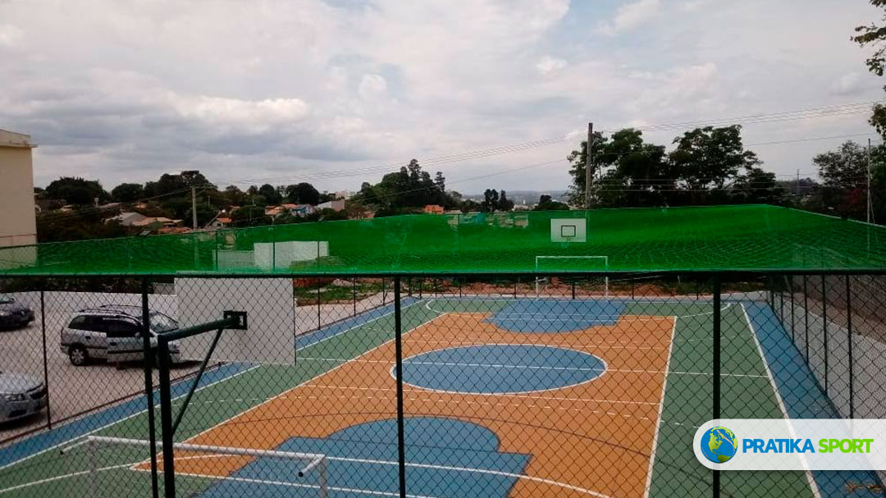

Se você está planejando construir uma quadra poliesportiva, uma das primeiras perguntas que vem à mente é: quanto custa construir uma quadra poliesportiva? Neste guia completo, vamos detalhar todos os custos envolvidos, os fatores que influenciam o preço e como fazer o melhor investimento para o seu projeto.

Quanto Custa Construir uma Quadra Poliesportiva: Visão Geral
O custo para construir uma quadra poliesportiva varia significativamente conforme diversos fatores. Em média, os valores podem variar de R$ 35.000 a R$ 100.000 para uma quadra padrão de 20m x 10m.
Tabela de Preços por Tipo de Piso (Quadra 20x10m)
Fatores que Influenciam o Preço da Quadra Poliesportiva
O preço da quadra poliesportiva é determinado por vários fatores. Entender cada um deles ajuda a fazer um planejamento mais assertivo:
1. Dimensões da Quadra
As medidas da quadra poliesportiva são um dos principais fatores de custo. Veja as dimensões mais comuns:
- Quadra Oficial: 20m x 10m (200m²) - Ideal para futebol, vôlei, basquete e handebol
- Quadra Média: 18m x 9m (162m²) - Ótima opção para espaços menores
- Quadra Compacta: 16m x 8m (128m²) - Perfeita para condomínios residenciais
- Quadra Mini: 12m x 6m (72m²) - Ideal para áreas residenciais pequenas
2. Tipo de Piso
O piso para quadra poliesportiva é o item que mais impacta no valor final. Cada tipo tem características específicas:
Piso Modular em Polipropileno
O piso modular é a escolha mais popular para quadras poliesportivas devido à sua versatilidade e durabilidade.
- Vantagens: Durabilidade de 15+ anos, baixa manutenção, excelente amortecimento, drenagem eficiente
- Desvantagens: Maior investimento inicial
- Ideal para: Condomínios, clubes, escolas e academias
- Garantia: 5 anos
Piso Asfáltico
O piso asfáltico oferece excelente custo-benefício para quem busca qualidade com investimento moderado.
- Vantagens: Bom custo-benefício, superfície uniforme, boa resistência
- Desvantagens: Requer manutenção periódica, pode esquentar no sol
- Ideal para: Quadras externas com orçamento limitado
- Durabilidade: 8-12 anos
Piso de Concreto
O piso de concreto é a opção mais econômica, ideal para projetos com orçamento restrito.
- Vantagens: Menor custo, alta durabilidade, fácil manutenção
- Desvantagens: Superfície mais dura, maior risco de lesões
- Ideal para: Áreas recreativas casuais
- Durabilidade: 20+ anos
3. Infraestrutura Adicional
Além do piso, é preciso considerar outros elementos que compõem uma quadra poliesportiva completa:
- Drenagem: R$ 5.000 - R$ 15.000 (essencial para quadras externas)
- Iluminação LED: R$ 8.000 - R$ 20.000
- Cobertura/Toldo: R$ 15.000 - R$ 50.000
- Alambrado: R$ 8.000 - R$ 20.000
- Traves e Redes: R$ 2.000 - R$ 5.000
- Tabelas de Basquete: R$ 3.000 - R$ 8.000
Medidas Oficiais da Quadra Poliesportiva
As medidas oficiais da quadra poliesportiva seguem as normas da ABNT e das confederações esportivas:
Por Modalidade
- Futebol Society: 20m x 40m (mínimo) a 25m x 50m (oficial)
- Vôlei: 9m x 18m (quadra oficial)
- Basquete: 15m x 28m (oficial FIBA)
- Handebol: 20m x 40m (oficial)
- Futsal: 20m x 40m (oficial)
Como Planejar seu Investimento
Para fazer um bom planejamento na construção de sua quadra poliesportiva, siga estes passos:
1. Defina o Uso Principal
Determine quais esportes serão praticados com mais frequência. Isso influencia no tipo de piso e nas dimensões ideais.
2. Avalie o Espaço Disponível
Meça o local onde a quadra será construída e considere a área de segurança ao redor (mínimo 2 metros).
3. Estabeleça um Orçamento
Defina quanto pode investir e priorize os itens essenciais. Lembre-se de reservar 10-15% para imprevistos.
4. Solicite Orçamentos Detalhados
Peça orçamentos de pelo menos 3 empresas especializadas. Compare não apenas preços, mas também garantias e referências.
Prazo de Construção
O prazo para construir uma quadra poliesportiva varia conforme a complexidade do projeto:
- Quadra simples (piso de concreto): 20-30 dias
- Quadra com piso asfáltico: 30-45 dias
- Quadra com piso modular: 30-60 dias
- Quadra completa (com cobertura e iluminação): 60-90 dias
Manutenção da Quadra Poliesportiva
A manutenção da quadra poliesportiva é essencial para prolongar sua vida útil:
Piso Modular
- Limpeza semanal com água e sabão neutro
- Verificação periódica das travas
- Reposição de peças danificadas
- Custo médio mensal: R$ 200 - R$ 400
Piso Asfáltico
- Limpeza regular
- Repintura anual das linhas
- Reparo de trincas e buracos
- Custo médio anual: R$ 2.000 - R$ 5.000
Conclusão
A construção de uma quadra poliesportiva é um investimento que traz inúmeros benefícios para condomínios, clubes, escolas e empresas. Com planejamento adequado e escolha correta dos materiais, você terá um espaço de lazer e atividades físicas que durará muitos anos.
Lembre-se de que o preço da quadra poliesportiva não deve ser o único fator de decisão. Qualidade, garantia e experiência da empresa contratada são igualmente importantes para garantir um resultado satisfatório.
Quer um Orçamento Personalizado?
Solicite seu orçamento grátis e receba uma proposta detalhada para seu projeto.
Falar no WhatsApp